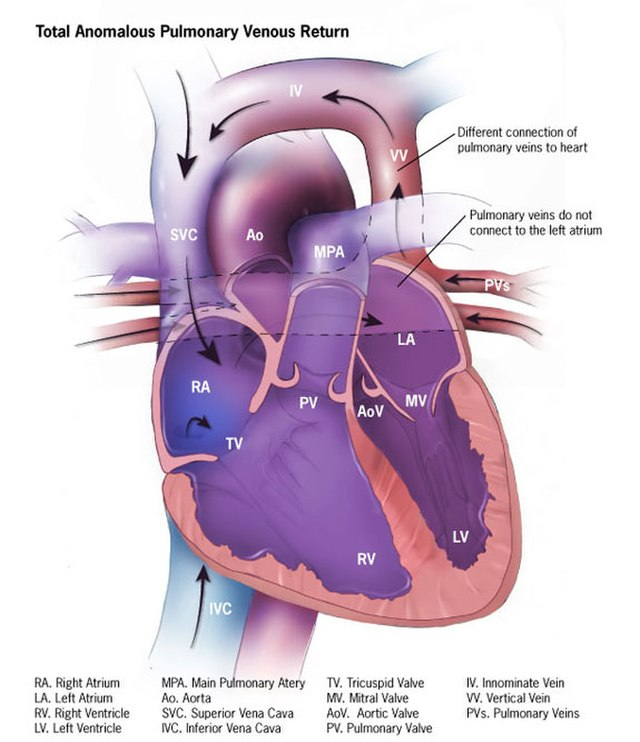

全肺靜脈回流異常（Total anomalous pulmonary venous return, TAPVR）
10 April 2025
16:29

圖說：全肺靜脈回流異常之解剖構造
Reference: Ilustration of totaly anomalyous pulmonary venous return, Centers for Disease Control and Prevention, 10 November 2013
使用 OneNote 建立。